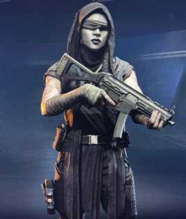
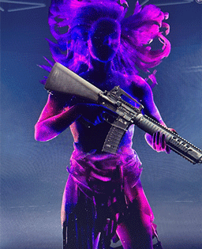
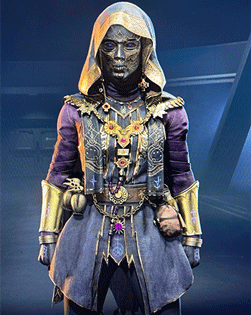
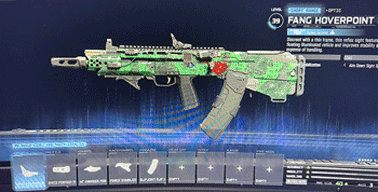
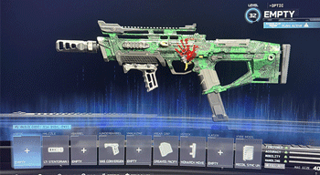
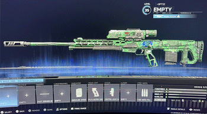

Sometimes the best way to understand a game is to see it in action. This page collects Warzone visuals and clips that show how the game looks, feels, and plays. From operator skins and weapon builds to actual gameplay moments.
Warzone features a wide range of operators and playable characters with different outfits, themes, and cosmetics. These operators help players express their identity and style in game. They also include some celebrity skins.



Weapon builds are a huge part of Warzone's identity. Players spend a lot of time tuning attachments to create guns that fit their playstyle. Here are some guns that are widely used currently.


